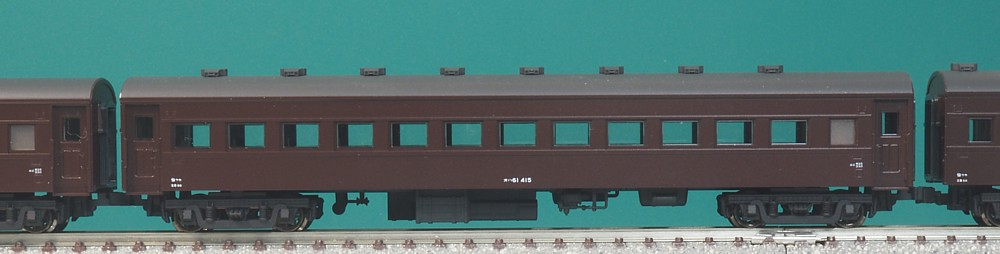
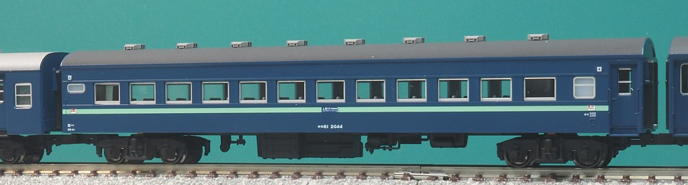
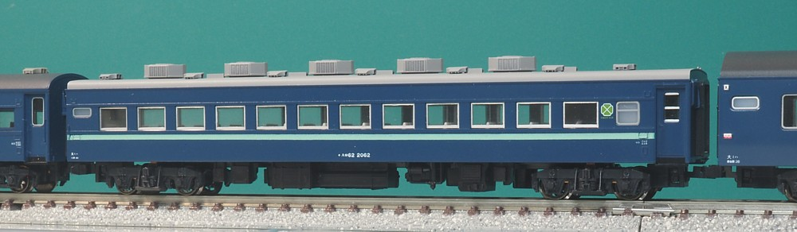
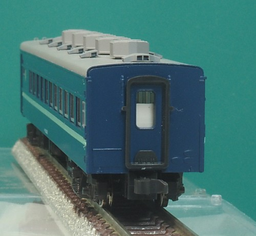
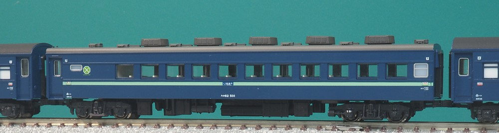
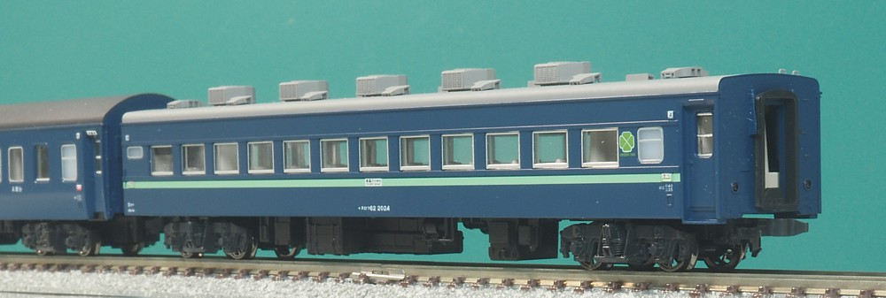
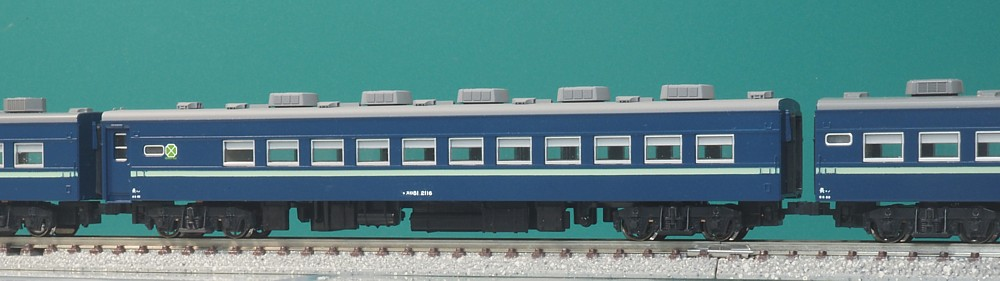

あちこちの客車急行列車に連結されていたグリーン車です。 末期には客車昼行急行は減ってしまったので夜行急行列車に連結されるとともに、 グリーン車を並べて団体列車としても運用されていました。
スロ62の話ですが、オハ61から始まります。
戦後、急行列車を増発するにあたって、グリーン車が大量に必要となりました。
一般形客車の新造は既に行わない方針になっていたため改造でまかなうことになり、
オハ61形を改造して生まれたのがオロ61・オロフ61形です。

後世の屋根にクーラーを装備したスロ62の外観からはオハ61が種車なことは想像もつかないのですが
窓配置はよく見るとまんまですし、間にオロ61を入れると種車からの変遷がわかります。
そういやNゲージで完成品のオハ61がなかった時代に、スロ62から逆に改造した作ることを
画策していたこともありました…。
このオハ61も鋼体化客車ですので木造客車からの改造で、この改造が既に2回目になるわけです。

でオロ61です。 片方の扉は塞がれて便所・洗面台になりました。 新設された便所は洋式になっています。 便所・洗面台の窓はHゴム支持になりましたが、これは一部の車両では施工されなかったようです。 台車はTR52になり、窓はアルミサッシ化、ドアも軽量客車と同じ上段が開くタイプとなり外観は軽量客車風になりました。 水タンクは寝台車と同様、大型のものが装備されました。(模型では表現されていません)
リクライニングシートを装備した特別二等車で、東北方面で運用されることから電気暖房を装備しています。 のちに九州方面用として非装備の車両も100番台で新製されていますが、のちに電気暖房化されました。
登場時には茶色に白帯、等級改正により茶色にグリーン帯となったあと、
青15号にグリーン帯と塗色が変わってゆきます。
模型はKATOの「みちのく」に含まれるもの。 オハフ45欲しさに買ったものですが、オロ61はこのために新規の金型が起こされており実はこっちが主役だったのかも…。 オロ61は当時、2両組み込まれているケースが多かったようで1両ではちょっと寂しいです。

客車も寝台車・グリーン車は冷房化されることになり、オロ61を冷房化して生まれました。 床下にディーゼル発電機を搭載、屋根を低く改造して分散型クーラー(AU13)を搭載しました。 鋼体化客車は台枠・車体の強度に余裕があり低屋根・冷房化して屋根が重くなっても大丈夫だったようです。
こちらは1990年代に、10系客車とともに発売されたスロ62。
思えば登場時は運用が終わってからわずか数年だったんですね。。。
発売時から30年以上たちますが同じ金型で通用してます。
屋根のベンチレーターをオユ11で使われているハーフガラベンと、トミックスのPB6018で別パーツ化しました。
(グレードアップパーツではありません…)
ハーフガラベンは背中側を浮かせて取り付けてあり、屋根との隙間ができるようにしています。

この時期のKATO、印象把握は完璧なんですが設計がやや適当なんですよね…。 スロ62のデッキ側の妻板はには謎の箱が飛び出てますし(手ブレーキ箱?)、 1-2位側にはついていないハシゴがついてたり。
謎の箱とハシゴは削り取り、点検蓋を取り付けました。 オロ61やスロフ62ではこの部分がきっちり修正されてます。 ちなみに銘板もややでかいので、これを種車にスロフ62とか作ろうとするなら潔く削り取っちゃうのがよいかと。 下手に残すと位置のバランスが崩れます。(私はやらかした…)

こちらは「ニセコ」に連結されていた500番台です。 末期まで客車で残ったのは「白山」「ニセコ」でしたが、「白山」のほうは碓氷峠の編成量数制限、 「ニセコ」のほうは本州と北海道との間の郵便・荷物輸送と理由はそれぞれでした。 「ニセコ」での連結位置は、航送される郵便・荷物車と緩急車についで連絡船の連絡通路に近い前よりでした。
北海道にわたりギア式の車軸発電機を装備して500番台となりました。二重窓になってます。 とはいっても横のスハ45とは異なり、スロ62のほうは本州にいた頃から二重窓にはなってたのではないかと。
模型は旧「ニセコ」セットです。 屋根をグレードアップし、やや強めに汚してました。 動画見るとほんとに真っ黒のやつとか上がってますが、屋根の色に差があるものもありそちらを取ってます。

車掌室、手ブレーキ、標識灯がついたスロ62の緩急車版です。 オロ61の緩急車版であるオロフ61を冷房化したものと、スロ62を改造したものとがあります。 団体列車としてグリーン車を連ねて運用する場合や、 寝台車を末端で切り離してグリーン車が編成端に出る場合に使われました。
こちらはKATOの「津軽」で新規につくられたもの。
屋根はこちらも自作でベンチレーターを別パーツ化しました。
グレードアップパーツの発売に合わせて自作の別パーツ化を作った、というのが流れです。
最終的には連結器のボディマウント化と端梁の工作をやりたいのですが
また仕掛かりが増えてしまうのでいったんこれで公開してます。
まずはオハニ36とスユニ61つくらんと…。
国鉄末期、余剰になったグリーン車を改造して生まれた「和式客車」です。 グリーン車として団体旅行などで使用されました。 窓には障子が追加され、車内を畳敷きにして掘りごたつが設置されていました。
スロフ81 + スロ81 x 4 + スロフ81の6輌で1編成となります。 金沢、静岡、門司、長野、名古屋、大阪、東京南に配置されました。 東京南局のものはテールサインがついており、 その後水戸に転属してJRになってからも生き残っていました。

KATOから東京南局のものを模型化して発売されたもの。を、 テールサインを取っ払って「普通の」スロフ81に改造したものです。 車番は長野のものをつけてますが、適当。
この車両、こだわり始めると雨どいの高さ、便所・洗面所窓の形状、
クーラーの種類、便所窓の閉塞、更に車端部の配電盤の形状など1両1両違っているため
キリがなく、まぁタイプです。
特に雨どいの高さは、Nゲージで工作するには限界…。
ちまちまベンチレーターを別パーツ化しようと思ってましたがグレードアップパーツが発売されたので そちらを取り付け。あっさり屋根がかっこよくなりました。 とはいえ車体に追加工が必要なのでまだ途中で、ぼちぼち取り付け進めます。。。